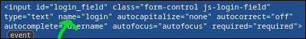
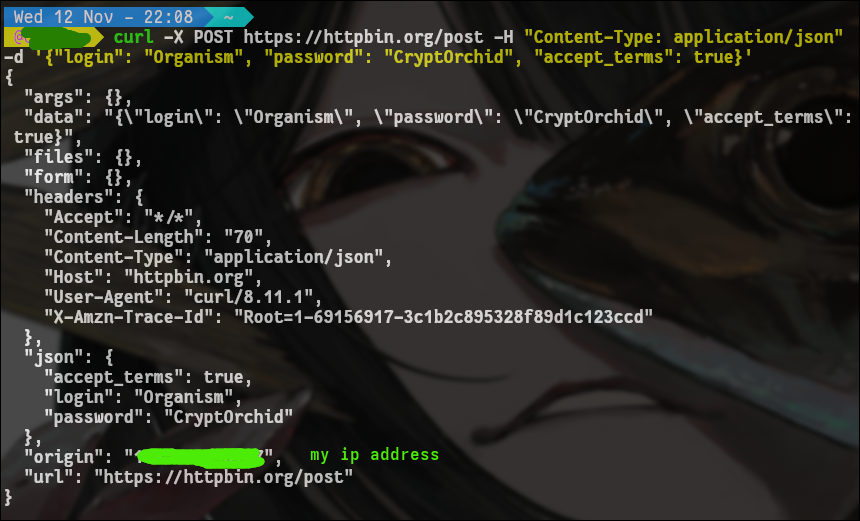

c u r l y
November 13, 2025
Submiting forms with curl POST command
Potential Use Case: signing in/accepting "terms of service" on public wifi networks without using a browser.
Step 1 :
find the elements on the webpage you need to interact with. Either with curl "https://example.com" and looking through the html directly
OR - (easier)
open webpage in a browser and right click on element (text box, etc. ) -> "inspect"
What we are looking for is the "name" of these input fields. (see image below)

Now we can start building our curl command. The basic parts we will use are:
| argument | description |
|---|---|
| -X POST | tells curl we will be sending data |
| -H "Content-Type: application/json" | tells curl the data type |
| -d 'ur data go here' | the data in question |
curl -X POST www.website.com -H "Content-Type: application/json" -d '{your json data goes here}'
https://httpbin.org/post
This is a useful example website to make sure your sending the correct data. It simply echos back a JSON response to what you send it.
testing out our command:
curl -X POST https://httpbin.org/post -H "Content-Type: application/json" -d '{"login": "Organism", "password": "CryptOrchid", "accept_terms": true}'

as you can see within the "json" { } brackets, the testing website echos it back correctly.
Conclusion:
this is my first time posting with curl, ive only ever webscraped with it.
Curl has many more features to play with, even being able to set --cookie and tell it a text file to write to. and then you can store a token inside that file to post back to the website youre logging into. Will be fun to play around with more in the future.